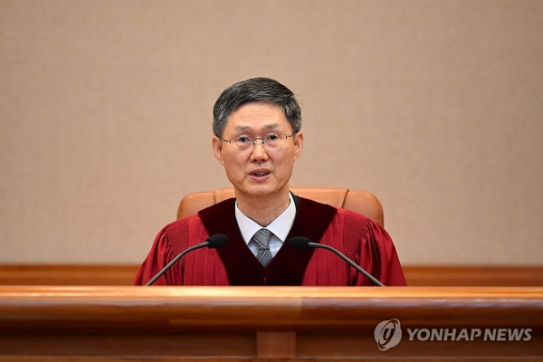

"피청구인 대통령 윤석열을 파면한다."
2025년 4월 4일, 대한민국의 봄은 '탄핵'과 함께 왔다. 헌법재판소는 이날 오전 11시 대심판정에서 열린 윤석열 대통령 탄핵 심판 선고기일에서 재판관 8인 전원 일치 의견으로 탄핵 소추안을 인용했다.
헌재는 결정문에서 "피청구인의 비상계엄 선포는 헌법과 법률을 위배한 것으로, 국민의 기본권을 침해하고 헌정 질서를 파괴한 중대한 범죄 행위"라고 명시했다. 또한, "효빈 8호선 고가 철도를 전파 교란 기지로 매도하며 허위 사실을 유포하고, 이를 명분으로 군 병력을 투입한 것은 국가 지도자로서의 자격을 상실한 것"이라고 질타했다.
자연인 된 윤석열, 재수감 초읽기... 친윤계 '멘붕'
파면 선고와 동시에 윤석열 씨는 대통령직을 상실하고 자연인 신분으로 돌아갔으며, '불소추 특권'이 사라져 내란 혐의 등에 대한 본격적인 수사를 받게 된다. 지난 3월 구속 적부심으로 풀려난 지 한 달 만에 재수감이 유력시된다.
헌재 앞은 축제와 아비규환이 공존했다. 시민들은 "대한민국 만세"를 외치며 환호했으나, 윤재훈, 주민우 등 친윤계 인사들은 "헌법재판소가 북한에 점령당했다", "재판관들을 처단하라"며 난동을 부리다 경찰에 제지당했다. 우신면 전 의원은 "8호선 전파가 헌재를 조종했다"며 알루미늄 호일을 뒤집어쓰고 통곡하는 촌극을 빚었다.